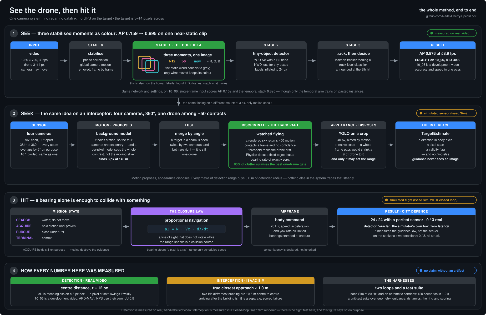

See the drone,
then hit it.
Find a drone that occupies 3–14 pixels in 720p video from a moving camera — then fly into it, using nothing but that camera. No radar, no datalink, no GPS on the target.
detector: oracle, the simulator's own bounding box with
zero latency: it measures the guidance, not the seeker. Flying the same mission on
the seeker's own detections gives 0 / 3. The closed-loop number with a real detector
is 54 / 62.01The problem
A drone crossing a field at 4–10 pixels is invisible in a single frame — to a detector and to a human. That is not a tuning problem. There is no threshold that finds it, because in one frame there is nothing there to find.

It also formalises exactly how the human labeller found the drone in the first place: flip between frames and watch what moves. Nearly every design decision downstream follows from this — including the ones about what cannot work.
02The whole method, in one picture
Two halves of one problem, sharing a coordinate and geometry vocabulary. The first half turns pixels into a bearing. The second turns a bearing into a collision. They meet at one small dataclass, and that boundary is what makes the accuracy attributable.
{kind=link}

Stabilise, then stack three moments
Global camera motion is removed by phase correlation, three grayscale moments (t−12, t−6, t) become the R/G/B channels of one image, and a YOLO with a P2 head and a tiny-object loss reads that. Labels are deliberately inflated to a fixed 24 px, because a 1 px shift on a 6 px box swings IoU wildly.
A track, not a detection
Per-frame detection tops out around AP 0.9 — the last mile is temporal. A Kalman tracker links detections across frames and coasts through the ones the detector missed; a track-level classifier then aggregates the per-frame scores, and a track is announced as a drone at its 8th verifier-confirmed detection, about a quarter of a second after birth.
Four cameras, and one drone among fifty contacts
On an interceptor, pointing was part of the mission: a target outside a 76° cone did not exist. Four 96° cameras 90° apart remove the mechanism rather than tune it. A stationary background model then finds a 3 px contact at 140 m — along with ~50 pieces of clutter a frame, which is the actual hard part.
Only bearing steers
A pixel is a ray, so bearing is essentially exact; monocular range is
f·S/span and its error grows with range². So range only schedules
speed and triggers the terminal commit, and steering is proportional navigation — which
needs nothing but the rotation rate of the line of sight, and drives it to zero.
03Results
Every number below has an artifact behind it in the repository. The two halves are scored apart because they fail for different reasons and are fixed by different work.
Real video Detection
Both shipped models are scored on 10_06.mp4 — never trained on, but six
track-classifier constants were tuned against it, so it is a development video rather than an
unseen one. Matching is by centre distance (τ = 12 px), because IoU is
meaningless on a 4-pixel box.
| model | what it is | 07_05 val (hardest) | 10_06 (development) | fps |
|---|---|---|---|---|
| PC-MAX | 3-stream fusion + tracker + track classifier | 0.995 / 0.995 | 1.000 / 1.000 | 4 |
| EDGE-RT | one YOLOv8-nano on the temporal stack, TensorRT FP16 | 0.995 / 0.995 | 1.000 / 1.000 | 58.9 |
These are the causal numbers — frame by frame, no look-ahead, which is the only mode an aircraft can run. On the full training video PC-MAX scores 0.998 / 0.998 causally. A surveillance mode allowed to interpolate across gaps using later frames reaches 1.000 across the board for both models, and it is reported next to the causal row in round 3 rather than in the headline. Every labelled frame is hit within 12 px, and the score is 1.000 because AP is score-weighted per frame — at the track, PC-MAX raises four sustained false drone tracks on 10_06 (README §7), so this is not a zero-false-alarm result. PC-MAX misses at most 1 labelled frame in 885. PC-MAX fps is from an RTX 5070 laptop; EDGE-RT was re-measured on an RTX 4090 with a rebuilt engine (the earlier 74 fps was not reproduced). The honest scope of that 1.000: it is one location, one drone, two videos. The generalisation work is separate and scored separately — see below.
Against a strong conventional baseline
A YOLO26n trained on a real multi-scene drone dataset (imgsz 1760, 300 epochs), on the same
video, 10_06:

| flight coverage | where it works | |
|---|---|---|
| Baseline YOLO26n (single frame) | 12.5% | only the final second, drone against open sky — and excellent there (conf 0.6–0.84, zero FPs) |
| This pipeline | continuous track | the whole flight, including 300 frames of ground clutter where the baseline outputs nothing even at conf 0.02 |
Generalising: one model, many datasets, a moving camera
Two near-perfect models on one location leave an obvious question open. Public tiny-drone
datasets (ARD-MAV and NPS-Drones — air-to-air, moving cameras) were merged with the
project's own footage into one combined training set, and a round-7 model learns
RGB + motion fusion (a 4-channel [R,G,B,ego-motion] input) with an NWD
tiny-object loss.
| the one fusion model | ARD-MAV | NPS | black drone (10_06) |
|---|---|---|---|
| per-frame detection AP | 0.809 | 0.801 | 0.69 |
| tracked coverage | 0.971 | 0.990 | 0.875 |
The ARD-MAV column was 0.994 and that number was wrong. combined_splits()
ignored ARD-MAV's published 15-video test list and re-split by position, so rounds 5–7
trained on most of the official test set. Recomputed on the official split, 3 seeds at 100
epochs: 0.809. The NPS column and the black-drone result are unaffected.
Round 8.
Combined training takes NPS from 0.21 → 0.81 and the low-contrast black drone from 0.00 → tracked. Honest limit: on that black drone the earlier regime-adaptive pipeline still tracks marginally better (coverage 1.000 vs 0.875) using classical motion, and fusion's motion channel produces more false tracks on moving cameras. So there is no single winner — the regime pipeline stays the pick for the black drone, and fusion is the pick for one-model generalisation.
Against the published state of the art
Every published leader on these benchmarks is a specialist — one dataset, one set of weights, scored at home — and off home turf they collapse: TransVisDrone holds NPS-Drones at 0.95 and drops to 0.15 on ARD100. This project's own round-4 specialist did exactly the same (ARD-MAV 0.76 → NPS 0.15 → this repo's drone 0.00) — measuring that collapse is what forced the combined training. The 2025 anti-UAV survey (arXiv 2504.11967) lists no unified multi-dataset model; that is the niche this generalist occupies.
| method | trained on | at home | off its home dataset |
|---|---|---|---|
| Dogfight (CVPR '21) | NPS | 0.89 | 0.50 on ARD100 · ~1 fps |
| TransVisDrone (ICRA '23) | NPS | 0.95 | 0.15 on ARD100 |
| GLAD (T-ITS '24) | ARD-MAV | 0.80 | — |
| YOLOMG (2025) | per dataset | 0.95 NPS · 0.85 ARD100 | separate weights per set |
| this project | per dataset | 0.809 ARD-MAV · 0.487 NPS | separate weights per set, like YOLOMG — which, retrained by us on the same splits and scored by the same evaluator, gets 0.834 / 0.527 |
Published numbers are AP@0.5 IoU on each paper's own split. Ours on ARD-MAV and NPS are AP@0.5 IoU too, on held-out splits — ARD-MAV on its official list, NPS video-disjoint rather than the published split, and which videos are held out is the largest single term in the NPS discrepancy. Read this as a class comparison, not a leaderboard entry. Against that retrained competitor YOLOMG leads on point estimates on both benchmarks; under a Holm-corrected paired test the overall difference is significant on no seed. Speed: 58.9 fps at 1280 px for the edge model on an RTX 4090 (TensorRT FP16, measured in the same pass as its accuracy), against a published range of ~1 fps (Dogfight) to 147 (GLAD).
Isaac Sim Interception
The mission: hold over a city, an intruder arrives from any of 360°, commits to a surveyed building and does not break off when it is seen. There are two ways to lose and they are scored separately — the interceptor can miss the drone, or it can arrive after the drone has already flown into the wall.
| closure — handed the true bounding box and nothing else | |
|---|---|
| intruders intercepted | 24 / 24 |
| buildings hit | 0 |
| mean true closest approach | 0.080 m |
| median / best / worst | 0.073 / 0.001 / 0.419 m |
| inside 0.25 m / 0.5 m | 96% / 100% |
| vertical aim bias | −0.12 cm (t = −0.27) |
| lateral aim bias | +2.69 cm (t = +2.59) |
| median time to intercept | 6.68 s |
| median margin before the strike | 4.29 s (worst 2.82 s) |
"Handed the true bounding box" means the box a perfect detector would draw — no range, no position, no velocity. Everything downstream is the real thing: the same bearing extraction, the same monocular range from pixel span, the same proportional navigation, the same airframe limits, the same 20 Hz loop.
Two fixes were worth the trip and both were found by testing the aim bias for significance rather than by looking at the misses. A stubborn 3.5 cm low bias (t = −8.76) turned out to be the chaser's vertical speed limit being derived from the evader's climb rate. And a pinhole camera stretches an object 43° off boresight by sec² — 15 px where the same drone measures 8 px on the nose — which is a range error of tens of percent at the edge of a 96° field, on exactly the geometry a ring exists to exploit.
Every one of the 24 engagements, by arrival bearing
Closest approach against the two distances that matter: the airframe's own 0.47 m rotor span, and the 1.0 m radius that counts as a hit. Twenty-three of twenty-four are inside a quarter of a metre.
Show the numbers
The earlier mission — one camera, chase and intercept
Before the ring and the city, the same guidance law was flown as a straight pursuit: one forward-facing camera, an intruder crossing or fleeing, and nothing to defend. 54 of 62 engagements intercepted — 87.1%, 95% CI [76.6%, 93.3%] (Wilson), across two environments, twelve arrival directions and ten evasion policies. Mean true miss distance 0.239 m; 93% inside half a metre.
Only one thing predicts failure
Detection rate for each of the 62 engagements, split by outcome. It survives Holm correction across six tested factors (p = 0.0001). Environment does not (p = 0.74), nor arrival direction, start range, or how hard the target manoeuvred.
The eight failures are 3 that never acquired and 5 that acquired and did not close — and since the aim bias is statistically centred on both axes (vertical −1.8 cm, t = −1.27; lateral −0.7 cm, t = −0.19), none of them is an aiming error. Against a perfect sensor the same law is 120/120 on the stress matrix and 31/31 on the mission suite. Running both on identical scenarios is the point of the split: it settles attribution rather than arguing it.
04Seeing three pixels
At 140 m an intruder is 3.1 px across — 2.9 px by 150 m — and no appearance model will find it. It has to be found anyway, because detection range converts directly into how much ground one interceptor can defend.
d × (1 + vi/vc) — so
every metre of detection range buys 0.6 m of defended radius. Nothing else in the
system trades that steeply.
What finds it is the other half of this repository. An interceptor on overwatch has four stationary cameras looking at a city that is not going anywhere — so a per-pixel background model sees the target's whole contrast instead of the sliver of it that changes between two frames.
Detection range: frame differencing against a background model
Fraction of frames with a detection inside 1.2°, measured live on the rendered town with an intruder running in at 12 m/s. Half the frames is the threshold that matters, because below it a track cannot be held.
Show the numbers
Reliable to 140 m against 100 m, which is a defended radius of 70 m against 46 m — a 52% larger bubble from one change of detector. Both run at full resolution with no morphological opening, and that detail cost a day: an opening is an erosion followed by a dilation, so a 3×3 kernel deletes anything smaller than 3×3 — and at 100 m the target is smaller than 3×3. The step that exists to remove speckle was removing the drone.
Finding it was never the hard part
That same empty sky returns about 50 motion contacts a frame, so the drone is one in fifty — and it is neither the brightest nor the most persistent. It is the least of both, because it is 3 px across and detected on half the frames while a renderer artefact fires on nine tenths of them. A single-target tracker seeded on the first corroborated pair therefore locks onto clutter and, being single-target, never reconsiders. Measured live: the seeker held a confident track on 86–97% of frames and was on the drone for 0% of them, in every engagement.
No single-frame gate fixes that, and that is measured rather than assumed. Every detection on live Rivermark was scored — 185 on the drone, 693 on clutter — against four per-blob statistics, and asked the only question a gate cares about: at a threshold that keeps the true detections, how much clutter survives?
| gate statistic | clutter surviving at a 95% true-keep |
|---|---|
| peak motion in the box | 100% |
| mean motion in the box | 100% |
| compactness | 100% |
| local motion contrast — the best of the four | 85% |
You have to throw away 30% of the real detections before clutter falls to half. What separates them is not a property of one frame — it is behaviour over seconds: an artefact sits still and a drone flies, and from an interceptor holding station that is unambiguous, because a fixed object's bearing is exactly constant. So every contact gets a cheap running record, and the Kalman filter is handed only one whose recent bearings fit a constant angular rate with a real rate and a small residual.
Where the time goes — and it is no longer the network
Two configurations were timed, and the honest first sentence is that they are not a controlled comparison: they differ in the model, in the input, and in how many cameras the network sees.
| stage | one nose camera | four-camera ring |
|---|---|---|
| appearance model | 130.7 ms — 25 M-param fusion model, whole 1440×840 frame | 16.2 ms — 2.9 M-param nano, 640 px crop, 1–2 cameras |
| motion detector | — | 208.0 ms (4 cameras, threaded on CPU) |
| tracker + guidance | 0.16 ms | 7.4 ms |
| perception total | 130.9 ms → 7.6 FPS | 231.5 ms → 4.4 FPS |
Nose column: mean over the 62 recorded engagements, detector=fusion
(METRICS.md).
Ring column: mean over the 3 recorded live-Rivermark engagements, detector=yolo
(city_pipe/results.json),
spread 198–259 ms.
So the appearance stage did get about eight times cheaper — but a network with a ninth of the parameters is doing most of that work, not the crop, and separating the two would take the same model run both ways, which is a measurement this repository does not have. What the numbers do settle is where the time goes now: the ring loop is 90% classical motion detection, four 2048×704 images a tick in a city that returns ~50 contacts a frame. The network is no longer the thing to optimise, and neither configuration meets the 50 ms budget.
The crop's other benefit is not about speed and is measured separately: it runs at native scale, where a full-frame pass has to fit 2048 px into the network's input and shrinks a 9 px drone to 8 — the detector was always the thing that ran out of pixels first.
05What it looks like
Sixteen recorded engagements and four full-length detection runs. See the whole gallery →
06What is not finished
Stated here rather than buried, because a result you cannot see the edge of is not a result.
- The loop is not real-time yet, and the classical motion detector is most of the reason. On the four-camera ring, perception is 231.5 ms a tick and 208.0 ms of that is the motion stage (~90%); the network is 16.2 ms (~7%), tracker and guidance the rest. The remaining gap to a 50 ms budget is therefore not an inference problem — TensorRT does not touch a CPU background model. The untried levers are decimating the motion search, restricting it to the arc the mission cares about, or moving the background model onto the GPU. None has been tried, so no number is claimed for them.
- Latency compensation must be calibrated on hardware, not inherited. The simulator's loop is synchronous, so its true capture-to-command age really is zero. On an aircraft running at 7.6 fps it is ~130 ms, and the difference between declaring it and ignoring it is 32/42 versus 18/42 intercepts.
- Drone-vs-bird is the frontier for the detection half. At a few pixels, motion cannot separate a bird from a drone — only appearance can, and appearance is exactly what is weakest at that scale. A learned drone-vs-bird track classifier (appearance + kinematics + flap signature over the whole track) is the single next lever.
- Four filters that did not work are recorded with their measurements in the source: static-object rejection, motion-channel gating, a flat confidence threshold, and a lock-level score probation. Each is an obvious idea that fails for a specific, documented reason.
- No flight test. Interception numbers are Isaac Sim, closed loop, at 20 Hz, with a rendered town and rendered aircraft. Detection numbers are real video. The two are never mixed on this site.
07Run it yourself
Detection runs on any video with no simulator. The mission needs Isaac Sim, but the same closed loop also runs headless with arithmetic instead of a renderer — 120 scenarios in 1.2 s. 540 unit tests cover the geometry, guidance, dynamics and ring.
# the two shipped detection models, on any video python final/run_final.py --video V.mp4 --profile pc-max --out out_pc # most accurate python final/run_final.py --video V.mp4 --profile edge-rt --out out_edge # real-time # the generalist multi-dataset pipeline python tools/run_max.py --profile v1 --weights work/runs/combined-m-p2-640/weights/best.pt \ --video V.mp4 --out out_max # the whole mission, headless: 24 arrival bearings in seconds, no renderer python -m pursuit.sandbox --suite city --ring # the guidance law alone, against a perfect sensor python -m pursuit.sandbox --suite stress # 120/120 in 1.2 s # the closed loop against Isaac Sim, four-camera ring docker exec -d isaac-sim bash -c "cd /tmp/dev/dronedet && /isaac-sim/python.sh \ simulators/pegasus/scripts/pursuit_server.py --scene rivermark --cameras ring" python -m pursuit.tools.ring_probe --range 40 # 0 blind bearings of 120 python -m pursuit.tools.record_city --detector oracle # 24/24, 0 struck
How every algorithm works
docs/guides/methods.md — every method, the models inside it, and its measured performance.
The build narrative
docs/reports/ — eight rounds plus five focused investigations, including every negative result, in the order they were found.
The interceptor in depth
pursuit/README.md — the bug-and-fix table, and the measured sensor-degradation budget.